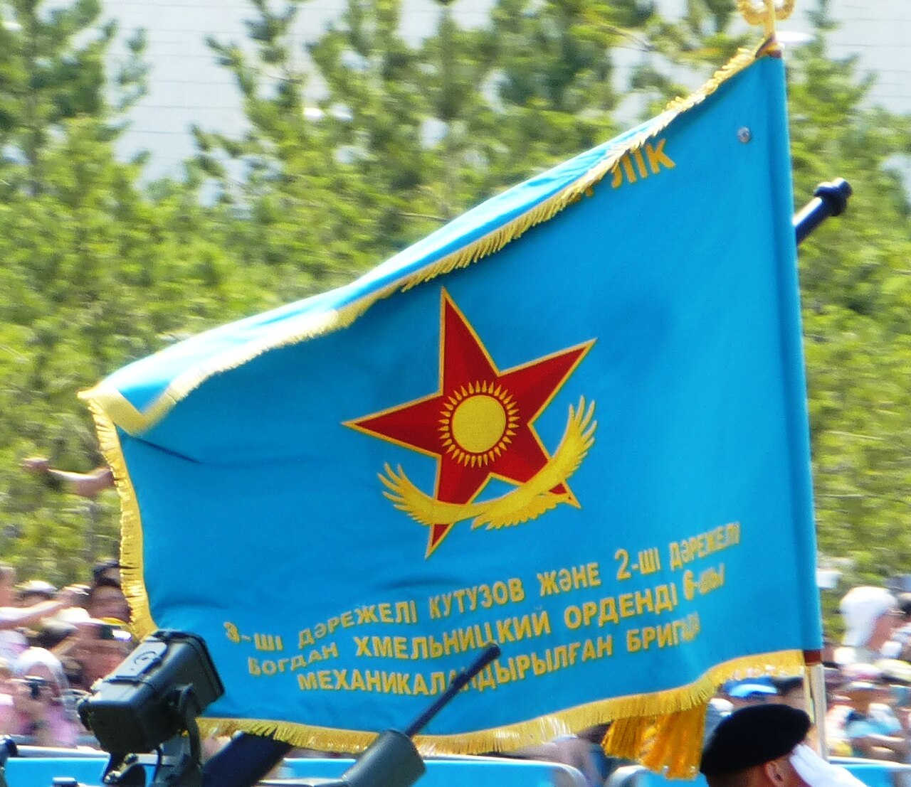

Әскери негіздер · №4 · Ант пен Ту Military Basics · No.4 · Oath & Banner Воинские основы · №4 · Присяга и Знамя
Антты бір рет береді, ал Туды өмір бағасына қорғайды — әскери намыстың рәміздері. The oath is taken once, the banner is defended with one's life — symbols of military honour. Присягу принимают один раз, Знамя защищают ценой жизни — символы воинской чести.

Әскери ант — азаматтың әскери қызметке кіргенде халық пен мемлекетке адалдыққа беретін салтанатты антты. Ол жауынгердің Отанды қорғауға, Конституция мен заңдарды, жарғылар мен командирлердің бұйрықтарын сақтауға деген жеке жауапкершілігін заңды түрде бекітеді. Анттың мәтіні «Әскери міндеттілік және әскери қызмет туралы» заңмен бекітілген. The military oath is a solemn vow a citizen takes upon entering military service, swearing loyalty to the people and the state. It legally seals the soldier's personal responsibility to defend the homeland and to observe the Constitution, the laws, the charters and the orders of commanders. The text of the oath is fixed by the Law "On Military Duty and Military Service". Воинская присяга — торжественная клятва гражданина на верность народу и государству при вступлении на военную службу. Она юридически закрепляет личную ответственность воина защищать Родину и соблюдать Конституцию, законы, уставы и приказы командиров. Текст присяги установлен законом «О воинской обязанности и воинской службе».
ҚР-ны қорғауDefend KazakhstanЗащищать РК
Конституцияны сақтауUphold the ConstitutionСоблюдать Конституцию
Заң мен жарғыны орындауObey laws & regulationsСоблюдать законы и уставы
Қиындыққа төзуEndure hardshipsСтойко переносить трудности
| ПараметрParameterПараметр | МәнValueЗначение |
|---|---|
| Кім бередіWhoКто принимает | бұрын ант бермеген әрбір әскери қызметшіevery serviceman who has not taken it beforeкаждый военнослужащий, ранее не принимавший её |
| Қанша ретHow many timesСколько раз | бүкіл қызмет бойы тек бір ретonly once in an entire service careerтолько один раз за всю службу |
| МерзіміTimingСрок | жалпы әскери даярлық курсын аяқтаған соң (көбіне қызметтің алғашқы айларында)after the course of basic training (usually in the first months of service)после прохождения курса общей подготовки (обычно в первые месяцы службы) |
| ОрныPlaceМесто | бөлім сапы алдында, ҚР Мемлекеттік туы мен Жауынгерлік Ту жанындаbefore the unit's formation, by the State Flag and the Battle Bannerперед строем части, у Государственного флага и Боевого Знамени |
Рәсім салтанатты жағдайда, командир бекіткен уақытта өткізіледі. Реттілігі қатаң сақталады: The ceremony is held in a solemn setting at the time set by the commander. The sequence is followed strictly: Церемония проводится в торжественной обстановке во время, установленное командиром. Последовательность соблюдается строго:
Ант қабылдау күні — бөлімнің мерекесі және жауынгер өмірінің есте қаларлық күні. The day of the oath is a holiday of the unit and a memorable day in a soldier's life. День принятия присяги — праздник части и памятный день в жизни воина.
Осы сәттен бастап жауынгер толық құқық пен жауапкершілікке ие болады: оған жауынгерлік міндеттерді тапсыруға, күзет пен кезекшілікке қоюға, қару мен әскери техниканы бекітуге болады. From this moment the soldier acquires full rights and responsibilities: he may be given combat tasks, posted to guard and duty, and have weapons and military equipment assigned to him. С этого момента военнослужащий обретает полный объём прав и обязанностей: ему могут ставить боевые задачи, назначать в караул и наряд, закреплять оружие и военную технику.
Антқа опасыздық — ауыр теріс қылық, ал кейбір жағдайларда (қашқындық, бұйрықты орындамау, сатқындық) — қылмыс; ол тәртіптік немесе қылмыстық жауапкершілікке әкеледі. Betrayal of the oath is a grave offence and, in certain cases (desertion, refusal of orders, treason), a crime; it entails disciplinary or criminal liability. Измена присяге — тяжкий проступок, а в ряде случаев (дезертирство, неисполнение приказа, измена) — преступление; влечёт дисциплинарную или уголовную ответственность.
Жауынгерлік Ту — әскери намыстың, ерлік пен даңқтың рәмізі әрі Отанды қорғаудың қасиетті парызын еске салатын белгі. Ол бөлім құрылған кезде мемлекет атынан тапсырылады, бөлім нөмірі мен атауын сақтайды және оған тұрақты түрде бекітіліп қалады — бөлімді қайта құрғанда да ауыспайды. The Battle Banner is a symbol of military honour, valour and glory and a reminder of the sacred duty to defend the homeland. It is presented to the unit on behalf of the state at its formation, bears the unit's number and name, and stays with it permanently — it is not changed even when the unit is reorganised. Боевое Знамя — символ воинской чести, доблести и славы, напоминание о священном долге защищать Родину. Вручается части от имени государства при формировании, несёт её номер и наименование и сохраняется за ней постоянно — не меняется даже при переформировании.